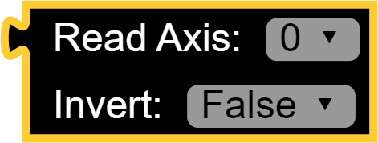
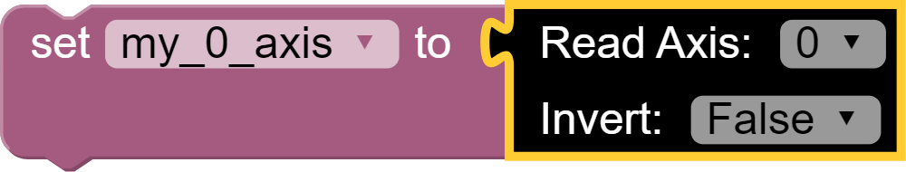
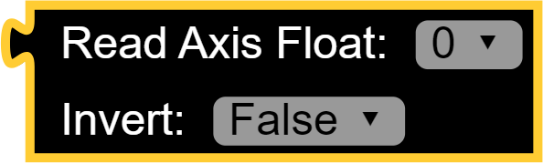
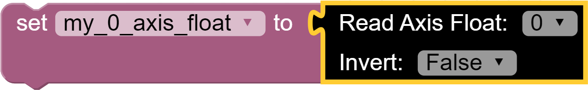
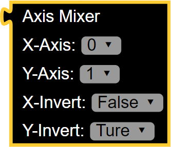
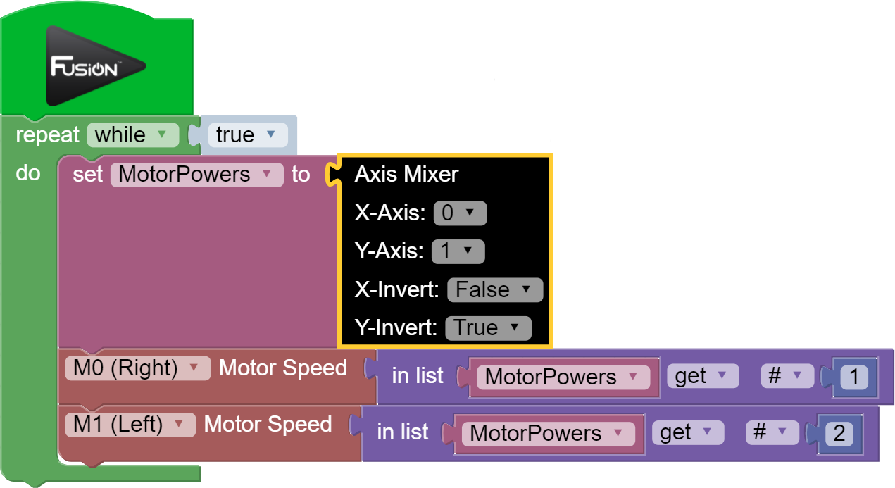
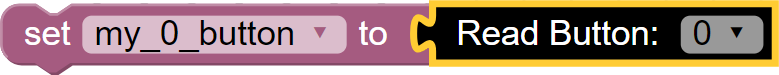
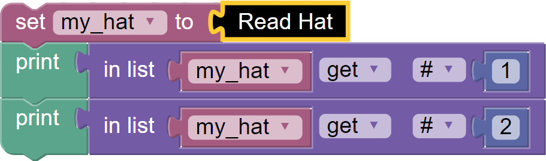
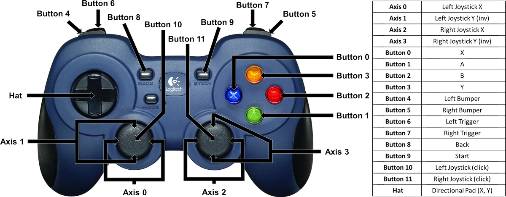
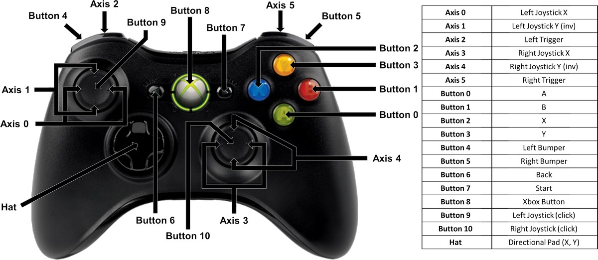

USB Gamepad
This library allows you to connect a wired or wireless USB gamepad to the Fusion for control.
List of available blocks:
Read Axis
Read the selected axis from the USB Gamepad as an integer. The available number of axes is dependent on the USB Gamepad. Refer to the diagrams for availability.
Invert will flip the positive/negative direction of the axis.
Read Axis returns a value between -100 and 100.Block:

Code Produced:
Setup:
import Fusion f = Fusion.driver() usbg = Fusion.usbGamepad()Code:
usbg.readAxis(0, False)Example:

code:
import Fusion f = Fusion.driver() my_0_axis = None usbg = Fusion.usbGamepad() my_0_axis = usbg.readAxis(0, False)
Read Axis Float
Read the selected axis from the USB Gamepad as a floating point number. The available number of axes is dependent on the USB Gamepad. Refer to the diagrams for availability.
Invert will flip the positive/negative direction of the axis.
Read Axis returns a value between -1.00 and 1.00.Block:

Code Produced:
Setup:
import Fusion f = Fusion.driver() usbg = Fusion.usbGamepad()Code:
usbg.readAxisFloat(0, False)Example:

Code:
import Fusion f = Fusion.driver() my_0_axis_float = None usbg = Fusion.usbGamepad() my_0_axis_float = usbg.readAxisFloat(0, False)
Axis Mixer
Combines 2 joystick values to create a proportional tank drive. The X-Axis is the joystick value for turning left or right. The Y-Axis is the joystick value for driving forward and backward. The X-Invert and Y-Invert can flip the value of a joystick between positive and negative. Therefore if the robot drives or turns in the opposite direction of the joystick, invert the appropriate axis.
Axis Mixer returns (M0, M1) where M0 and M1 range from -100 to 100.Block:

Code Produced:
Setup:
import Fusion f = Fusion.driver() usbg = Fusion.usbGamepad()Code:
usbg.axisMixer()Example:

Code:
import Fusion f = Fusion.driver() MotorPowers = None usbg = Fusion.usbGamepad() while True: MotorPowers = usbg.mixer(0, 1, False, 1,) f.motorSpeed(f.M0, MotorPowers[0]) f.motorSpeed(f.M1, MotorPowers[1])
Read Button
Read the selected button from the USB Gamepad. The available number of buttons is dependent on the USB Gamepad. Refer to the diagrams for availability. Read Button returns a value that is 0 when the button is not being pressed and a 1 when the button is being pressed.
Block:
Code Produced:
Setup:
import Fusion f = Fusion.driver() usbg = Fusion.usbGamepad()Code:
usbg.readButton()Example:

Code:
import Fusion f = Fusion.driver() my_0_button = None usbg = Fusion.usbGamepad() my_0_button = usbg.readButton(0)
Read Hat
Read the hat of the USB Gamepad. The hat may also be called the directional pad (D-pad). The hat can return a possibility of 9 possible combinations of values. Read Hat returns (X, Y) where X and Y can be equal to -1, 0 or 1.
Block:
Code Produced:
Setup:
import Fusion f = Fusion.driver() usbg = Fusion.usbGamepad()Code:
usbg.readHat()Example:

Code:
import Fusion f = Fusion.driver() my_hat = None usbg = Fusion.usbGamepad() my_hat = usbg.readHat() print(my_hat[0]) print(my_hat[1])

Questions?
Contact Boxlight Robotics at support@BoxlightRobotics.com with a detailed description of the steps you have taken and observations you have made.
Email Subject: Fusion Blockly USB Gamepad
USB Gamepads
Logitech F310 Gamepad

Xbox 360 Game Controller
